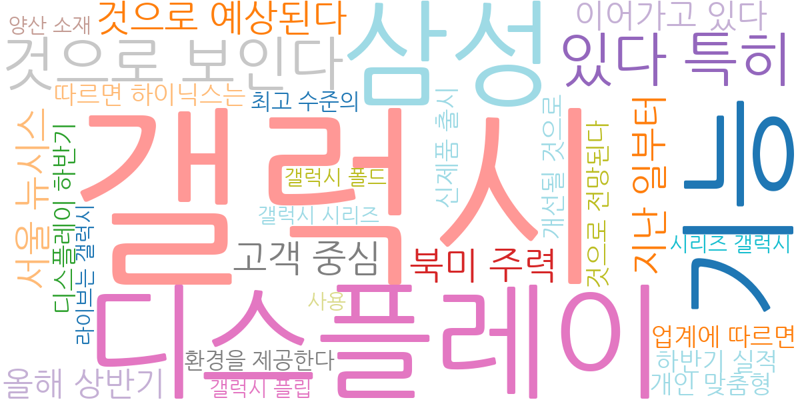
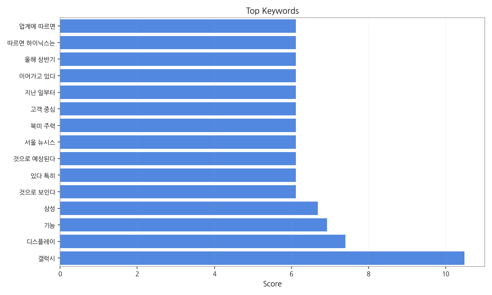
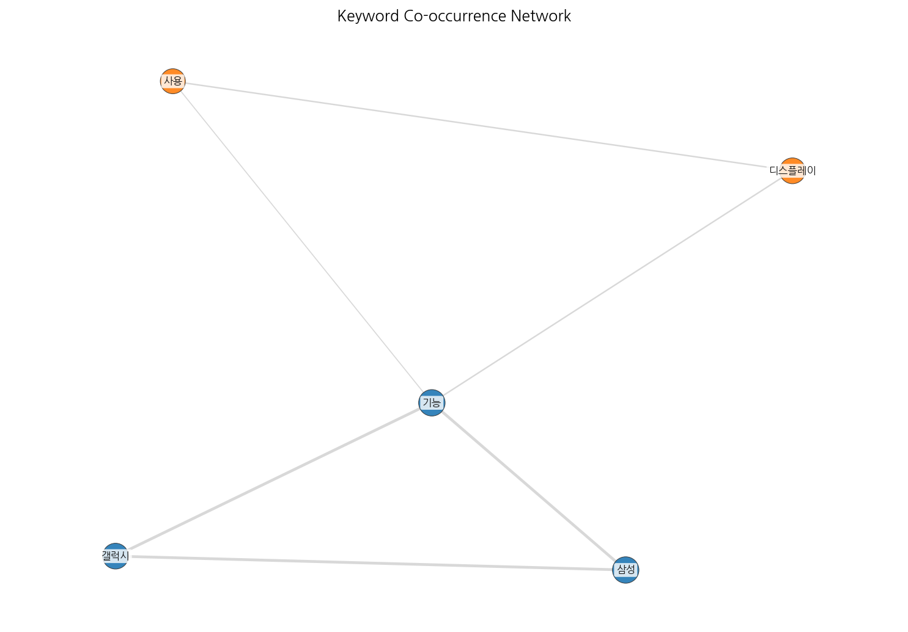
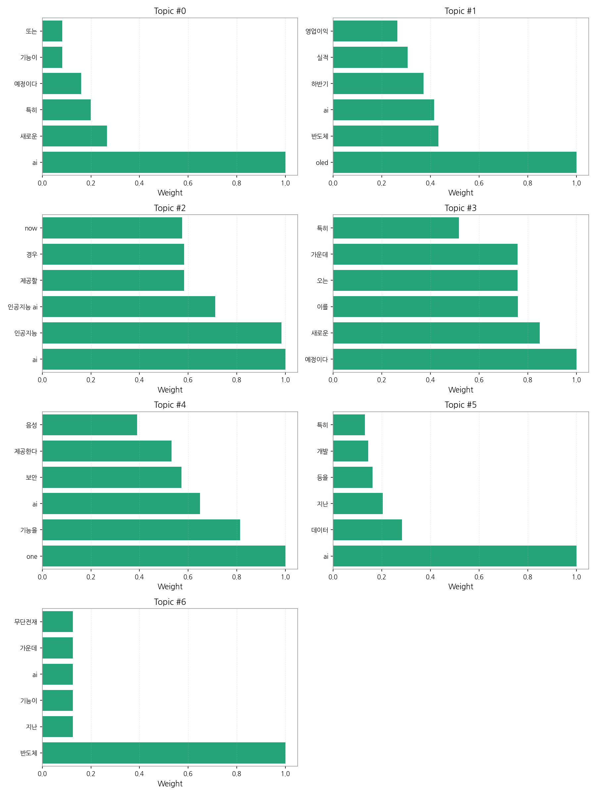
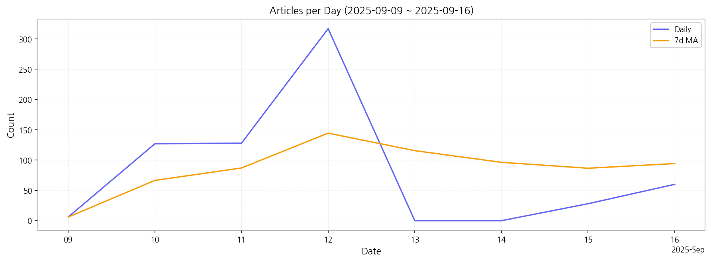

1) 상위 토픽을 3개 주제로 묶어 핵심 맥락을 설명하면 다음과 같습니다. 첫째, AI 기술 발전 및 응용 주제는 AI의 새로운 기능 개발, 고객사 대상 AI 서비스 제공, AI 기반 영상 기술 등 다양한 분야에서의 AI 활용 증가를 보여줍니다. 둘째, 반도체 산업과 AI의 융합 주제는 OLED, 반도체 산업의 실적과 AI 기술의 연관성을 나타내며, 특히 하반기 실적 개선에 AI 기술이 중요한 역할을 할 것으로 예상됩니다. 마지막으로, 미래 기술 예측 및 계획 주제는 새로운 기능 추가 예정, 미래 기술 개발 계획 등을 다루며, AI 기술을 중심으로 한 미래 기술 발전 방향을 제시합니다.
2) 최근 변화/스파이크를 살펴보면, 9월 12일 기사 수가 317건으로 급증한 것을 확인할 수 있습니다. 이는 특정 AI 관련 기술 발표나 이슈 발생으로 인한 언론의 집중적인 보도 때문일 가능성이 높습니다.
3) 실무 인사이트 3가지:

| Rank | Keyword | Score |
|---|---|---|
| 1 | 갤럭시 | 10.484 |
| 2 | 디스플레이 | 7.400 |
| 3 | 기능 | 6.917 |
| 4 | 삼성 | 6.687 |
| 5 | 것으로 보인다 | 6.110 |
| 6 | 있다 특히 | 6.110 |
| 7 | 것으로 예상된다 | 6.110 |
| 8 | 서울 뉴시스 | 6.110 |
| 9 | 북미 주력 | 6.110 |
| 10 | 고객 중심 | 6.110 |
| 11 | 지난 일부터 | 6.110 |
| 12 | 이어가고 있다 | 6.110 |
| 13 | 올해 상반기 | 6.110 |
| 14 | 따르면 하이닉스는 | 6.110 |
| 15 | 업계에 따르면 | 6.110 |




1) 상위 토픽을 3개 주제로 묶어 핵심 맥락을 설명하면 다음과 같습니다. 첫째, AI 기술 발전 및 응용 주제는 AI의 새로운 기능 개발, 고객사 대상 AI 서비스 제공, AI 기반 영상 기술 등 다양한 분야에서의 AI 활용 증가를 보여줍니다. 둘째, 반도체 산업과 AI의 융합 주제는 OLED, 반도체 산업의 실적과 AI 기술의 연관성을 나타내며, 특히 하반기 실적 개선에 AI 기술이 중요한 역할을 할 것으로 예상됩니다. 마지막으로, 미래 기술 예측 및 계획 주제는 새로운 기능 추가 예정, 미래 기술 개발 계획 등을 다루며, AI 기술을 중심으로 한 미래 기술 발전 방향을 제시합니다.
2) 최근 변화/스파이크를 살펴보면, 9월 12일 기사 수가 317건으로 급증한 것을 확인할 수 있습니다. 이는 특정 AI 관련 기술 발표나 이슈 발생으로 인한 언론의 집중적인 보도 때문일 가능성이 높습니다.
3) 실무 인사이트 3가지:
| Idea | Target | Value Prop | Score |
|---|---|---|---|
| 전자부품 조달 플랫폼 (AI 기반 수요 예측) | 전자 제조 기업, 부품 유통업체 (EU) | AI 기반 수요 예측 및 재고 관리 시스템을 제공하여 부품 조달 효율을 극대화합니다. 정확한 수요 예측을 통해 재고 부족 및 과잉을 방지하는 것이 차별점입니다. | 4.80 |
| AI 기반 디스플레이 품질 검사 자동화 플랫폼 | LG디스플레이, 삼성디스플레이 등 대형 디스플레이 제조사 (KR) | AI 기반 이미지 분석 기술을 활용하여 불량률 감소 및 생산성 향상을 제공합니다. 기존 수작업 대비 검사 속도와 정확도를 크게 높여 비용 절감 효과를 제공하는 것이 차별점입니다. | 4.50 |
| 모빌리티-디스플레이 연동 데이터 분석 서비스 | 자동차 제조사, 디스플레이 제조사, 모빌리티 서비스 제공업체 (KR) | 모빌리티와 디스플레이 간 데이터를 통합 분석하여 사용자 경험 개선 및 새로운 서비스 개발을 지원합니다. 실시간 데이터 분석을 통해 사용자 맞춤형 서비스 제공이 가능한 것이 차별점입니다. | 4.20 |
| AI 기반 사이니지 콘텐츠 자동 생성 서비스 | 백화점, 쇼핑몰, 공항 등 사이니지 운영 기업 (JP) | AI 기반 자동 콘텐츠 생성 및 관리 서비스를 제공하여 시간과 비용을 절감합니다. 시장 트렌드를 반영한 맞춤형 콘텐츠 제작이 가능한 것이 차별점입니다. | 4.00 |
| AI 기반 디스플레이 패널 수명 예측 서비스 | 디스플레이 유지보수 업체, 대형 디스플레이 운영 기업 (JP) | AI 기반 머신러닝 알고리즘을 활용하여 디스플레이 패널의 수명을 정확하게 예측하고, 예방적 유지보수를 통해 비용을 절감합니다. 정확한 수명 예측을 통한 효율적인 자산 관리가 차별점입니다. | 3.70 |